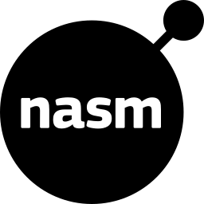
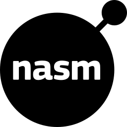

Leander Kieweg
Hello, I am a 20 year old software developer, currently working at a company offering automated warehouse solutions. I'm deeply passionate about developing embedded systems, with a strong focus on working close to the hardware. I thrive in environments where I can leverage low-level languages like C++ to create efficient, reliable, and high-performance solutions.


 
